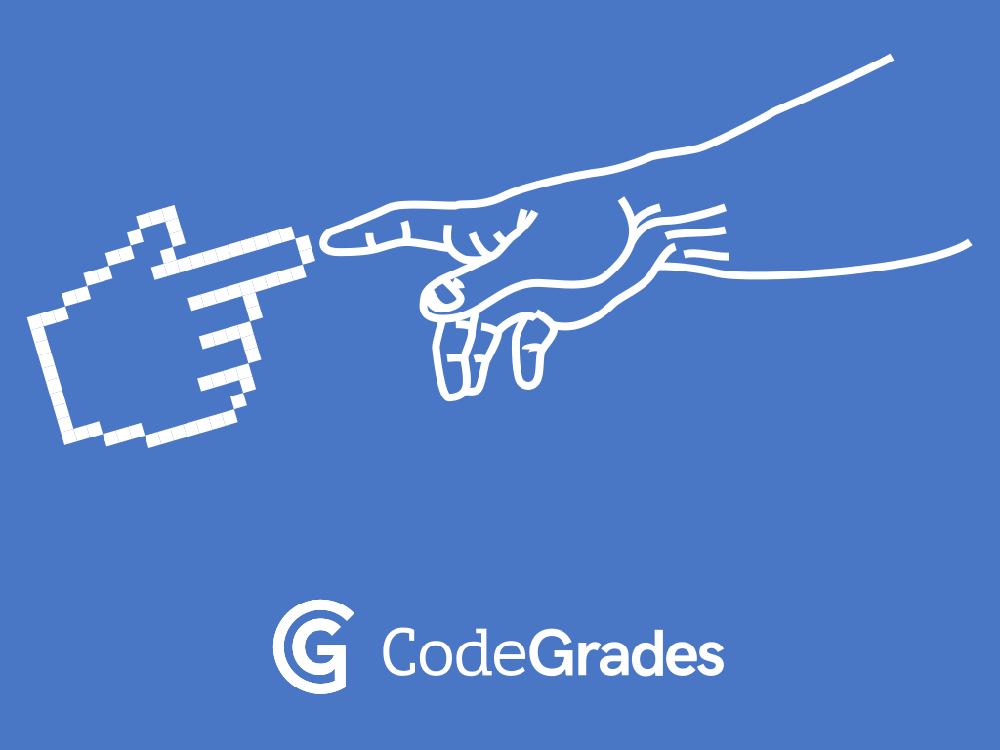

Why Python?
CodeGrades (initially) targets Python as a language for learning programming. This post explains why.

The most obvious answer is that the folks involved in CodeGrades are professional Python programmers. But there are more fundamental reasons why Python makes a great choice when first learning to write software, especially when compared to other programming languages.
A primary strength of Python is its readability. Python uses indentation to structure code, so how it looks and is presented tells us something about how the code works. Python also has remarkably few confusing special syntactic symbols to organise code.
Why is this important?
If, like me, you have taught learners with English as an additional language or
who have a special educational need such as dyslexia, then you will know
that Python's intuitive indentation is something people, the world over, all
understand (no matter their human language background or potential barriers to
educational engagement). A lack of confusing symbols, such as {, } and ;
scattered around the code makes Python very easy to read compared to other
languages. Furthermore, the indentation rules guide learners to present and
write their code (no need to remember what all those confusing symbols mean).
Since you don't have to concentrate that much on how to read and write Python code, you can put more effort into actually understanding it. Anything that lowers the effort required to engage with programming in an educational context is a good thing. In terms of code accessibility for learners, Python is an excellent choice.
Another strength is that Python is a mostly obvious and simple language.
The names of things built into the language make sense (for example, "list" rather than "array" and "dictionary" rather than "hashtable"), the things built into the language are useful (the so-called batteries included approach) and often such features are implemented in a simple and intuitive way. This puts Python in a rather unique sweet spot: the language has enough features that it's useful, Python usually names these things in an obvious way (making them easy to discover) and using such features is often easy. Of course, there are aspects of Python for which such generalisations are false. However, when dealing with beginner developers, Python's combined strengths of usefulness, clarity and simplicity are an extraordinary advantage compared to pretty much all other text based programming languages.
Python also endeavours to do the "expected" thing. For instance, if I try to add a dictionary and a list Python will complain:
>>> {} + []
Traceback (most recent call last):
File "<stdin>", line 1, in <module>
TypeError: unsupported operand type(s) for +: 'dict' and 'list'
Python is saying you can't use the + operand to sum together a dictionary and
a list. This, I would argue, is the "expected" thing to do. When I ask myself,
"what should be the answer to adding a dictionary and a list?" I can't think of
a sensible answer. Summing really only makes when used with numeric values or
as a short-hand way to "add" two strings of characters together (for example,
"hel" + "lo" makes "hello").
Contrast this behaviour with JavaScript. Look what happens when I try the equivalent operation:
> {} + []
0
Of course the answer is obviously zero..!?!?!? I mean, what were you expecting it to be?
Here's some more fun. What happens when we switch around the summed terms?
> [] + {}
"[object Object]"
If you were expecting the same result and got a surprise when things were different, then you're demonstrating the importance of consistency (especially in an educational context -- this is an important aspect of building up internal mental models of how programming languages work).
Learning, by its very nature, involves making mistakes and realizing that
mistakes have been made. Only then can behaviour be adjusted, mental models
updated and progress made. If you're learning to code with a programming
language that would rather make what appears to be a best guess at what you
mean (like JavaScript), rather than complain about an obvious error, then all
sorts of problems will pass unnoticed. Instead, you'll either continue with
your mistaken or incomplete view of the programming world or you'll have to
learn stuff like the rather tortuous rules used by JavaScript that cause
{} + [] to equal 0 and [] + {} to equal [object Object] (whatever that
may mean).
Python, on the other hand, will just (helpfully) complain about your mistakes. Please don't misconstrue my examples as an attack on JavaScript. The point is simple: different programming languages have different strengths and weaknesses (and often what appears as a strength in one context, is a weakness in another), and Python's preference to complain is (because it helps avoid misunderstandings) a good thing.
Such a focus also encourages both learners and professionals alike to create understandable and coherent code. Such code is easier to maintain and less likely to contain bugs (because many bugs are caused by misunderstanding what the code is actually doing compared to what you mistakenly think it ought to be doing). Python is powerful because it allows folks to simply state their ideas in coherent code. This, once again, is an extraordinary advantage in an educational context since learners can focus on the problem in hand rather than having to create, configure and build "boilerplate" code needed before anything useful can be accomplished (a rather demoralizing activity).
Python is also a real programming language. By this I mean it is not just some sort of educational tool such as Scratch and other block based projects. The skills and knowledge gained by learning Python are economically valuable and useful in many vocations. Put simply, learning Python has professional value in many disciplines. The reach of Python is also an advantage. You'll find Python running on all sorts of different platforms (from desktop operating systems to server farms "in the cloud") and devices (from your laptop to an embedded device no bigger than your finger nail) to fulfil all sorts of tasks (from helping to render state-of-the-art computer generated special effects in films, or processing data captured from space telescopes and scripting computer games to, running some of the busiest websites in the world).
It turns out that learning Python gives you a useful and widely applicable skill!

Finally, there is the Python community. It has been my happy experience that many folk in the Python community are welcoming, friendly and work in a spirit of open, supportive and respectful collaboration. My hope is that CodeGrades can go some way to help continue such a spirit in new programmers by engaging with those who share a constructive passion for programming education in the wider Python community. While not a unique feature, the focus on and openness to beginner programmers and new community members is certainly a great strength of the wider Python community.
However, like all communities, the Python community also contains thoughtless, ignorant and (alas) nasty folk. Sometimes things go wrong, causing pain for some or all involved. CodeGrades acknowledges such experiences and views them as sadly inevitable. We believe it important to foster in CodeGrades participants a constructive, respectful and honest outlook and promote expectations of open, safe and friendly collaboration. Such expectations for the behaviour of code mentors and candidates alike, while preparing for and taking part in the grading process, reflect our belief that CodeGrades isn't just about learning technical skills. CodeGrades is a way to cultivate and foster the social skills and maturity needed to deal with the inevitable problems that may arise. CodeGrades isn't just about learning to code, it's also about learning to flourish in a technical community.
So, why Python? In conclusion: we know it already, it's a powerful language, it's a valuable skill and it has an amazing community which is fertile for promoting the flourishing of beginner programmers.
Finally, all of the Python positives described above demonstrate the thoughtful efforts and formidable technical skill of a huge number of folk within the Python community. CodeGrdaes would like to publicly thank all involved. It is our sincere hope that if our CodeGrades experiment is a success, we can give back to this wonderful community.